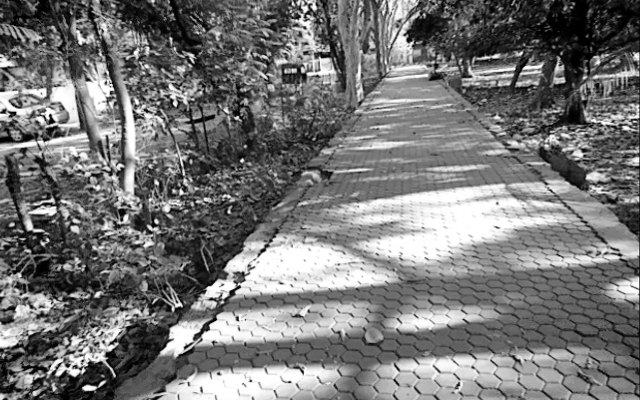
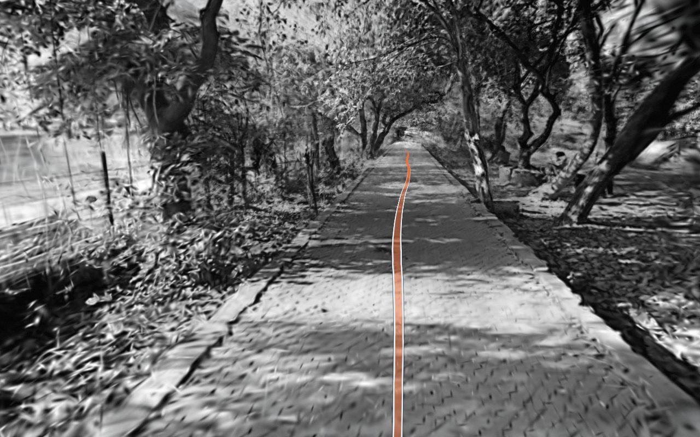
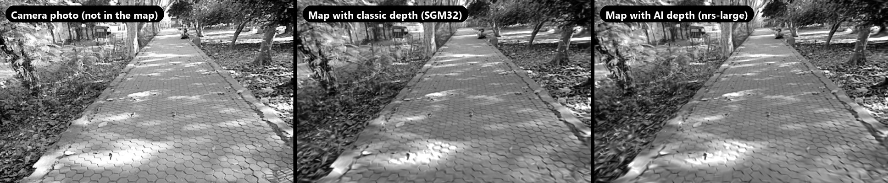

Depth model · zero-shot ML
Zero-shot depth from two cameras.
Two cameras, like two eyes. This ML model (machine learning, a kind of AI) works out how far away each point is. It learned only from computer-made images. We tested it on real photos from cameras it never saw. We trained it from scratch. The network design, DLNR, is from another team.
nrs-large version 0.1.0 Free download Paper: PDF. Author: Sumedh Bouddh
- 57 millionparameters
- 155,769computer-made photo pairs it learned from: synthetic training data
- 200,000training steps, 92 hours on one graphics card
- From scratchrandom initialisation, no other team's trained model inside
See the difference
Same photo. Two ways to see depth.
Left: 32-path SGM, the classic method: a fixed rule. Right: our depth model: learned from examples. DragSlide the line.



Bright = near. Dark = far. Grey stripes = no answer. The photo is the grey image that both methods see.
Classic method: an answer for 96 % of the pixels. ML model: 100 %. Where both answer, they agree within one pixel on 91 % of them.
What to look for
Trunks, poles, fences, leaves. The ML model draws sharper edges. The classic method smears them and leaves holes.
Where the ML model guesses
It answers every pixel, also sky, glare and blank walls, where nobody can measure. It cannot say "I do not know". The classic method says "no answer" there.
Same place, built twice.
Same photos, two depths, two 3-D places.
Depth gives a 3-D place its starting shape. We built each place twice from the same photos and camera path. Only the depth changed. Move one view: the other follows.


Drag in either view to look around. Use the arrow keys to walk.
How close each place looks to photos it never saw
We kept some camera photos out of the build, then compared them with the 3-D place from the same spot. Higher is closer (PSNR). We give two measures: the map alone, and the map with a sky backdrop behind it. On the field places most of each photo is sky, which a map does not hold, so their "map alone" numbers are low for both. The new depth is better on 3 of 8 places for the map alone and on 6 of 8 with the sky. The changes are small, and some places got a little worse.
| Place | Map alone (dB) | With the sky backdrop (dB) | ||||
|---|---|---|---|---|---|---|
| OldSGM32 | MLnrs-large | Change | OldSGM32 | MLnrs-large | Change | |
| A park path under trees203 test photos | 19.26 | 19.64 | +0.38 (better) | 19.67 | 19.93 | +0.26 (better) |
| A street in India188 test photos | 17.08 | 17.50 | +0.42 (better) | 19.90 | 20.08 | +0.18 (better) |
| A lane under trees115 test photos | 18.14 | 17.99 | -0.15 (worse) | 20.41 | 20.11 | -0.30 (worse) |
| A long straight road112 test photos | 18.04 | 17.05 | -0.99 (worse) | 19.52 | 19.62 | +0.10 (better) |
| A shaded park walk264 test photos | 17.64 | 17.76 | +0.12 (better) | 17.91 | 17.94 | +0.03 (better) |
| A soybean field in Argentina184 test photos | 11.79 | 10.45 | -1.34 (worse) | 21.28 | 20.78 | -0.50 (worse) |
| Soybean rows beside a dry field66 test photos | 7.17 | 6.65 | -0.52 (worse) | 27.38 | 27.44 | +0.06 (better) |
| Long green soybean rows60 test photos | 7.44 | 7.17 | -0.27 (worse) | 27.35 | 27.39 | +0.04 (better) |
Seen from the same spot
A camera photo that neither map was built from, and both maps from the same spot. Four photos per place. All are shown, also where the classic depth looks closer.

How we trained it
From random numbers to depth, in four steps.
-
1 · Data
Computer-made worlds
Rooms, flying objects and nature, rendered by a computer. The true distance of every pixel is known, so the network can be graded exactly. 155,769 stereo pairs from the public WMGStereo-150k set.
-
2 · Training
From scratch, on one GPU
Supervised deep learning: 200,000 steps of gradient descent, 92 hours on one NVIDIA RTX 5090. The network started from random numbers.
-
3 · Test
Real photos it never saw
A zero-shot test on six public benchmark sets of real photos. For four of them we wrote the pass marks down before training began (pre-registration). It passed 4 of 4.
-
4 · Use
Into our 3-D places
Our 3-D places take their depth from this model. It is also the teacher of our small model, nrs-edge.
Scores on real photos (lower is better)
Each number is the share of pixels whose answer is off by more than 1, 2 or 3 pixels (bad-1, bad-2, bad-3). Another team trained this same network design on this data set and published its scores. We followed their recipe, with small changes that we list. Our copy of the nature data had 7,627 fewer pairs. Our numbers are within 5 % (or 0.1) of theirs on 4 of 6 sets. On ETH3D ours is better. On Middlebury 2021 ours is worse.
| Test set | Measure | nrs-largeour weights | Same design, publishedother team's training, same data | RAFT-Stereopublic weights, scored in TF32 | Our run against the published rowsame within 5 % or 0.1 |
|---|---|---|---|---|---|
| Middlebury (half size)indoor scenes | bad-2 | 3.91 % | 3.76 % | 8.67 % | Same |
| Middlebury 2021indoor scenes | bad-2 | 8.44 % | 6.72 % | 10.26 % | Worse |
| ETH3Dindoor and outdoor | bad-1 | 2.04 % | 2.50 % | 2.61 % | Better |
| KITTI 2012city streets | bad-3 | 3.38 % | 3.30 % | 4.76 % | Same |
| KITTI 2015city streets | bad-3 | 4.59 % | 4.54 % | 5.48 % | Same |
| Booster (quarter size)glass, mirrors and screens | bad-2 | 9.22 % | 9.09 % | 17.75 % | Same |
What it cannot do (yet)
The honest list.
- It is slow. Inference: 0.28 s per photo pair (640 × 480) on one RTX 5090. In our map builds: 0.24 to 0.72 s per pair, 80 to 280 times slower than the classic method (about 3 ms). So we use it only after the recording, to give depth to our map builder. Our live software that tells a robot where it is (xclean) uses no neural network.
- It learned only from computer-made pictures. Real camera noise, glare and blur are new to it: the sim-to-real gap.
- It always answers. Also where it can only guess: sky, glare, blank walls. It cannot say "I do not know". The classic method says "no answer" there.
- The maps changed only a little. With the sky backdrop, the new maps are better on 6 of 8 places. The map alone is better on only 3 of 8. Two places got worse on both measures: the soybean field in Argentina and the lane under trees.
- Glass and mirrors fool it. On photos of TV screens, 64 % of the pixels are off by more than 2 pixels.
- The network design is not ours. It is DLNR, published by Zhao and others with open code (MIT licence). The trained weights are ours.
- One test is worse than published. On Middlebury 2021 we score 8.44 % against their 6.72 %. We do not know why. Our copy of the nature data had 7,627 fewer pairs than theirs. That may be the cause. We have not tested it.
- The last refinement step did not always run. The design runs it only when every pixel gets a positive answer. On the photos of our 8 places it ran on only some of them: it was skipped on 47 to 83 % of the photos of each place (the 83 % is a farm-robot field; on our own camera it was 47 to 75 %).
For engineers
nrs-large 0.1.0
Free to download under Apache-2.0, also for commercial use.
- Task
- Dense stereo matching: disparity of the left image for every pixel; depth = focal length × baseline ÷ disparity.
- Architecture
- DLNR (high-frequency stereo matching): channel-attention transformer feature extractor, 1-D correlation pyramid (4 levels, radius 4), multi-level LSTM-style recurrent update block, normalisation refinement. 32 iterations at inference.
- Size
- 57.4 M parameters. FP32 inference, TF32 off.
- Training
- Random initialisation; WMGStereo-150k only (BSD-3-Clause tag on its dataset card); the authors' recipe (AdamW, OneCycle, batch 8, crop 384×736) with our listed changes: bf16 mixed precision with FP32 correlation and loss; micro-batch 2 with 4-step gradient accumulation; 200,000 steps, 92 GPU-hours (RTX 5090).
- Evaluation
- Zero-shot, WMG protocol, our harness (it reproduces the published RAFT-Stereo numbers). Release gate fixed before training (pre-registered): 4 of 4 passed.
- Paper
- nrs-large: retraining the DLNR stereo network from scratch on synthetic data, with open weights for commercial use (PDF, version 1.1, 22 November 2026). It gives the full recipe, every declared deviation, the test protocol, all results and the limits.
- In our maps
- Our map builder, xclean-maps, with nrs-large depth: a version not released yet (the released xclean-maps 0.1.0 uses 32-path SGM only). The same poses, keyframes and recipe as the earlier maps; only the depth changed.
For engineers
nrs-edge 0.1.0
Free to download under Apache-2.0, also for commercial use. Code and model card. Weights.
- Task
- Dense stereo matching, as nrs-large: a rectified pair in, the disparity of the left image out. One forward pass, no iterations. Disparity range 0 to 192 px.
- Architecture
- Lite Any Stereo V2, size S, by Jing and others (open code, MIT licence): FasterNet-T0 feature network, correlation volume at 1/4 resolution, cost aggregation, softmax disparity regression. The network design is not ours. The trained weights are ours.
- Size
- 6.04 M parameters. Files: safetensors (PyTorch) and ONNX (FP32 and FP16, 640×480 and 640×400).
- Training
- No weights of another group and no ImageNet weights. 256,471 computer-made pairs with true labels, and 95,316 real pairs with labels from nrs-large (the teacher). 13 data sources; each one is listed with its licence in the attribution file. Four training stages, after a short pre-stage for the feature network.
- Evaluation
- Our harness; the same test sets as nrs-large. Three pass marks fixed before the test (pre-registered): “Near” passed; “Floor” failed (2 of 4 sets, 3 are needed); “Stretch” not reached (ETH3D 5.09 against 4.11, KITTI 2015 5.57 against 4.01). Each candidate was scored one time. The model card lists every scoring, also the 3 failed attempts.
- Speed
- Not measured on a robot's computer. Our aim is a Jetson Orin Nano class board; this is an aim, not a result. On a desktop RTX 5090: 3.18 ms for one 640×400 pair (median, TensorRT FP16). A desktop number is not a number for a robot's computer.
- Limits
- Weak on glass, mirrors and screens, and on near objects with a large disparity. A disparity above 192 px is always wrong. It answers every pixel and gives no confidence value. It needs a rectified pair. The full list is in the model card.
nrs-edge against nrs-large (lower is better)
The share of pixels whose answer is off by more than 1, 2 or 3 pixels, on public sets of real photos. The two KITTI rows of nrs-edge are not zero-shot: its training data has other driving photos (DrivingStereo). No photo of a test set was used in training.
| Test set | Measure | nrs-edge6.04 M parameters | nrs-large57.4 M parameters |
|---|---|---|---|
| Middlebury (half size)indoor scenes | bad-2 | 12.71 % | 3.91 % |
| Middlebury 2021indoor scenes | bad-2 | 30.07 % | 8.44 % |
| ETH3Dindoor and outdoor | bad-1 | 5.09 % | 2.04 % |
| KITTI 2012city streets | bad-3 | 4.62 % | 3.38 % |
| KITTI 2015city streets | bad-3 | 5.57 % | 4.59 % |
| Booster (quarter size)glass, mirrors and screens | bad-2 | 28.63 % | 9.22 % |